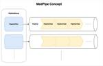

メドピア開発者ブログ
https://tech.medpeer.co.jp/
集合知により医療を再発明しようと邁進しているヘルステックカンパニーのエンジニアブログです。読者に有用な情報発信ができるよう心がけたいので応援のほどよろしくお願いします。
フィード

数億データを処理する仕組みを提供する gem 『MedPipe』 を OSS として公開しました 2
2
メドピア開発者ブログ
こんにちは。サーバーエンジニアの佐藤太一(@teach_kaiju)です。 本記事では社内で開発した、数億のデータを処理する仕組みを提供する gem MedPipe を紹介します。 MedPipe とは 「Log のデータを全て取得し、フォーマットして tsv として S3 にアップロードする」という要件があったとします。 この要件を実現するために、例えば以下のような実装を考えることができます。 upload_file_name = "hoge_logs.csv" # 1. S3にアップロードするための file を用意 Tempfile.create do |file| # 2. Log の…
6日前

ActiveRecord クエリキャッシュのメモリ使用量と無効化
メドピア開発者ブログ
こんにちは。サーバーエンジニアの佐藤太一(@teach_kaiju)です。 本記事では、クエリキャッシュのメモリ使用量と有効/無効の切り替え方法について紹介します。 クエリキャッシュとは クエリキャッシュのメモリ消費量 計測用コード 結果 考察 find_each 等ではクエリキャッシュが無効になる クエリキャッシュを無効化する方法 切り替え検証 おわりに 参考文献 クエリキャッシュとは Active Recordのクエリキャッシュは、1つのリクエストまたはジョブの実行中に同じSQLクエリが複数回実行された場合、2回目以降のクエリの実行を省略し、最初の結果をメモリ上にキャッシュして再利用する機…
22日前
Vue Fes Japan 2024 After Meetupを開催しました！
メドピア開発者ブログ
こんにちは！メドピアの福田（@Yusa136）です。 2024年11月01日（金）に弊社オフィスにて、MNTSQ株式会社、STORES株式会社と3社でVue Fes Japan 2024 After Meetupを合同開催しました！ Vue Fes Japan 2024 の感想や思い出を語り合いました。この記事では当日の様子やセッションの内容をお届けします。 LT 「VitePressで見つけたアウトプット習慣」 トップバッターは弊社メドピアの岡澤さんです！ VitePressを活用したアウトプット習慣の作り方についての話が印象的でした。「飽き性だけど続けられる」という岡澤さんの言葉の示す通り…
1ヶ月前
Vue Fes Japan 2024に参加しました！#vuefes
メドピア開発者ブログ
こんにちは。 メドピアの伏見 ( @fussy113 ) です。 2024年10月19日に大手町プレイス ホール＆カンファレンスで開催された Vue Fes Japan 2024 に参加してきました！ この記事では当日の様子やセッションの内容などをお届けします。 スポンサーとしての取り組み メドピアはゴールドスポンサー、セッションルームネーミングライツスポンサーとして協賛いたしました。 スポンサーブース 握力で技術的負債を粉砕しよう！ 『握力測定 in Vue Fes Japan 2024』 と題して、握力を測定していただきました。 🧐握力測定はしましたか？🧐#メドピア ブースでは握力測定を実…
2ヶ月前
監査ログの保管先をRDBからS3に移行する
メドピア開発者ブログ
こんにちは。サーバーサイドエンジニアの @atolix_です。 今回はメドピアで運用しているアプリケーションのkakariの監査ログをDB管理からS3管理に移行したので、その方法と手順について紹介したいと思います。 kakari.medpeer.jp 背景 従来kakariではAuditedを用いて、監査ログを専用のauditsテーブルに保管する処理を行っていました。 github.com # application_record.rb class ApplicationRecord < ActiveRecord::Base ... include Auditable # auditable.…
2ヶ月前
メドピアはVue Fes Japan 2024にゴールドスポンサーとして協賛します！
メドピア開発者ブログ
こんにちは。 10月からメドピアのVPoEになりました保立 ( @purunkaoru ) です。 メドピアは2024年10月19日に大手町プレイス ホール＆カンファレンスで開催される Vue Fes Japan 2024 にゴールドスポンサー、セッションルームネーミングライツスポンサーとして協賛、そしてブースの出展も行います！ ブース企画 今回のメドピアブースは 握力で技術的負債を粉砕しよう！ 『握力測定 in Vue Fes Japan 2024』 と題し、ブースを訪問いただいた皆さまに、握力測定を行っていただきます。 握力測定に挑戦！ 握力測定、最近してますか？ 学生以来測ってないという…
2ヶ月前
小さくはじめる OKR
メドピア開発者ブログ
集合知プラットフォーム事業部・開発部の榎本です。 前回の記事はフロントエンドエンジニアの小林さんによる『小さくはじめる Vue の Composable』でした。 今回は小さくはじめるシリーズ第二弾ということで、今期開発部でOKRを導入してみて、それがいい感じにワークしたので紹介したいと思います。 OKR導入前の課題 OKRを導入 OKRをどう決めるか？ OKR研修を実施 OKRの決め方 マネージャー陣でディスカッション 時間はめっちゃかかる 工夫した点 KRオーナーを決める 週定例で進捗を追う OKRの振り返り よかったこと 課題に感じたこと 今後改善したいこと OKRを成功させるためのポイ…
2ヶ月前
小さくはじめる Vue の Composable
メドピア開発者ブログ
こんにちは。フロントエンドエンジニアの小林和弘 @kzhrk0430 です。 今日は、Vue の機能のひとつである Composable を導入してみた体験談をシェアしようと思います。Vue を使っている方にはおなじみの機能かもしれませんが、僕が所属するチームでは Composable があまり積極的に利用されていない状況だったので Composable を小規模に導入したお話をします。 Composable とは Vue における Composable の基本的な概念と役割について説明します。 Vue 2 では機能ごとのオプション（data, methods, computed, etc…）…
2ヶ月前
Amazon CloudFront環境におけるクライアントIPアドレスについて 〜CloudFront-Viewer-Addressの紹介〜
メドピア開発者ブログ
こんにちは。サーバーサイドエンジニアの三村（@t_mimura39）です。 本日はRuby・Railsの話に限定せず、Amazon CloudFront を利用している方に役立つ情報をご提供します。 目次 はじめに 「X-Forwarded-For」を活用する方法 「CloudFront-Viewer-Address」を活用する方法 Railsエンジニアへ 注意点 おまけ 参考資料 はじめに 弊社は基本的にAWS上にRailsアプリケーションを構築しているため、CDNが必要になるとまず選択肢として挙がるのが 「Amazon CloudFront（以下CloudFront）」です。 「Cloud…
2ヶ月前
EM目線で見たiOSDC/DroidKaigi
メドピア開発者ブログ
モバイル開発グループのリーダーを務める小林(@imk2o)です。 今年もiOSDCとDroidKaigiに参加してきました！ 例年と異なり、今年はモバイル開発グループのマネジメントを行う立場で参加したこともあり、いつもとは異なる目線でカンファレンス参加への意義や、今後のモバイルアプリエンジニアのキャリアについて考えてみました。 開発コミュニティに関わること まずこういったカンファレンスを「情報収集を行うための場」という見方をしていませんか？ もちろん新しい技術や知見を獲得できる機会であることは間違いありませんが、もっと大切なことがあります。 それは他のエンジニアたちと直接意見交換することだと私…
2ヶ月前
DroidKaigi 2024に参加してきました！
メドピア開発者ブログ
はじめに こんにちは！メドピアにてモバイルアプリエンジニアをしている佐藤です。 今年のDroidKaigiに、弊社はサポーターとして協賛し、総勢3名のモバイルアプリエンジニアがオフラインにて参加しました。 実際に足を運んだセッションを中心に、DroidKaigi 2024の参加レポートをお届けいたします。 セッションについて Android ViewからJetpack Composeへ 〜Jetpack Compose移行のすゝめ〜 syarihuさんによるセッションです。 youtu.be このセッションではJetpack Composeへの移行の進め方が中心のお話となります。 弊社では複数…
3ヶ月前
YJIT有効化後にUnicornワーカーを増やした場合の各メトリクスの推移について
メドピア開発者ブログ
はじめに こんにちは。サーバーサイドエンジニアの冨家(@asahi05020934)です。現在は、全国の医師が経験やナレッジを 「集合知」として共有し合う医師専用コミュニティサイト「MedPeer」の開発を行っています。 Ruby 3.2からYJITが実用段階になりました。「MedPeer」でもパフォーマンスを改善するためにYJITを有効化することになりました。 本番環境でYJITを有効化後、ECSサービスのMemory Utilizationに余裕があったので、ECSサービスのUnicornワーカー数を増やすことを検討しました。 しかし、YJIT有効化後のUnicornワーカー数とメトリクス…
3ヶ月前
iOSDC Japan 2024に参加しました
メドピア開発者ブログ
みなさん、こんにちは！アプリエンジニアのオウです。 先日、iOSDC Japan 2024に参加してきました！今年、メドピアはシルバースポンサーとしてiOSDC Japanをサポートいたしました。会場はたくさんの参加者で賑わい、とても充実した時間を過ごすことができました。いくつか印象に残ったセッションを紹介したいと思います。 Appleウォレット / Googleウォレットに チケットを保存する方法 speakerdeck.com このセッションでは、Apple WalletとGoogle Walletにパスを保存する方法についての説明です。実は今回のiOSDCで初めてチケットをApple W…
3ヶ月前
RailsアプリケーションにThrusterを導入する
メドピア開発者ブログ
こんにちは。サーバーサイドエンジニアの @atolix_です。 今回は37signalsが公開しているThrusterを、メドピアで本番運用をしているアプリケーションのkakariに導入してみました。 kakari.medpeer.jp Thrusterとは Thrusterはアセット配信やX-Sendfileのサポートといった機能を持ったGo言語製のHTTP/2プロキシです。 詳細な設定不要でRails標準のPumaサーバーと組み合わせて動作して、nginxを構成に加えた時と同様のリクエスト処理を行うことが可能です。 github.com www.publickey1.jp 導入前の状況 導…
3ヶ月前
SolidQueue解体新書
メドピア開発者ブログ
こんにちは。サーバーサイドエンジニアの三村（@t_mimura39）です。 さて、Railsエンジニアの皆さんは非同期処理にどのようなライブラリを利用していますか？ ちなみに弊社では Sidekiq を利用するプロジェクトが多いです。 tech.medpeer.co.jp 今回はRailsでの非同期処理ライブラリの新たな選択肢として誕生した「SolidQueue」について解説します。 github.com 目次 🆕 更新履歴 🆕 2024/09/12 🙋 はじめに 🙋 📝 SolidQueueとは 📝 🚀 SolidQueueの特徴 🚀 🔓 「FOR UPDATE SKIP LOCKED」 と…
3ヶ月前
成功循環モデルから学ぶ、チーム力を向上させた取り組み
メドピア開発者ブログ
こんにちは。エンジニアの保立(@purunkaoru) です。 先日、弊社のMVPに、開発チームのリーダーをしている四方さん(@shikatadesu)が選ばれました。 style.medpeer.co.jp 近くで見て、僕が勉強になった点を「成功循環モデル」をもとに紹介いたします。 チームビルディングで悩まれている方の参考や気付きになれば嬉しいです。 成功循環モデルは、「関係の質」、「思考の質」、「行動の質」、「結果の質」という順序で質が向上していく考え方です。各段階の質が高まることで次の段階の質も向上し、良い結果が循環するとされています。詳しくは以下のリンクをご参照ください。 「成功循環モ…
3ヶ月前
HTTP API Clientライブラリの自作を手助けするGemを公開しました
メドピア開発者ブログ
こんにちは。サーバーサイドエンジニアの三村（@t_mimura39）です。 育休明け早々猛暑の熱気にやられ部屋に閉じこもっています。 今回はとあるGemを作成したので、そちらの紹介をさせていただきます。 目次 前フリ Gemの概要 カスタマイズ性について まとめ おまけ 前フリ Webアプリケーションを開発されている皆さん。 外部のHTTP APIを呼び出すような要件が発生したらどのように実装されますか？ まずはHTTP Clientライブラリ（Gem）の選定からですよね。 無難なところでfaraday、最近?だとhttpなんかも選択肢にありますし、Gemを利用せずにRuby標準の Net::…
4ヶ月前
Capybaraとreg-cliを使ってお手軽にビジュアルリグレッションテストを行える環境を整備しました📸
メドピア開発者ブログ
こんにちは、MedPeerの開発を担当している森田です。 今回は私が開発に参画しているMedPeerに元々E2Eテストで利用していたCapybaraと、reg-cliを利用してビジュアルリグレッションテスト(以下VRT)を行える環境を整備したので、それについてご紹介させていただきます。 なぜ、VRTを導入するのか？ VRTの要件と技術選定 実際に構築したVRT基盤の概要 VRT基盤の具体的な話 System Spec内でスクリーンショットを取得する reg-cliでスクリーンショットの差分をチェックする 分かりやすいコマンドでVRTを実行できるようにする CIで差分をチェックする OS間での利…
5ヶ月前
Ruby 3.3(+YJIT)へのアップデートによるパフォーマンス変化の計測
メドピア開発者ブログ
こんにちは。サーバーサイドエンジニアの @atolix_です。 今回はメドピアで本番運用をしているアプリケーションの1つであるやくばと for Clinicにて、Ruby 3.2からRuby 3.3にアップデートを行った際のパフォーマンスの変化を計測しました。 Ruby 3.3ではYJITの大幅な改善が含まれているので、これによるアプリケーションへの影響を確認していきます。 www.ruby-lang.org gihyo.jp 前提 本記事に記載されたデータは以下の条件で計測をしています。 Rails: 7.1.3.4 YJIT有効化時のオプションは特に付与していない状態(Dockerfile…
5ヶ月前
Matzさんを交えて、RubyKaigi 2024の社内共有会を実施しました！
メドピア開発者ブログ
こんにちは！メドピアの伏見(@fussy113)です！ メドピアでは、Rubyの父でありメドピアの技術アドバイザリーを務めていただいているMatzさん(@yukihiro_matz)をお招きして、オンライン会議を開催しています。 そのオンライン会議にて、5月に開催されたRubyKaigi 2024に参加したエンジニアからの共有会を実施しました。 この記事ではその共有会のレポートをお届けします！ RubyKaigi 2024 と メドピアのスポンサーの運用 RubyKaigiのプロポーザルを通したい。 ruby.wasm 最前線 2024 - wasmでMockServerをつくる Improv…
5ヶ月前
Nuxt 3 への移行に Nuxt Bridge を使うのはいかが？
メドピア開発者ブログ
こんにちは！フロントエンドエンジニアの土屋 (@tutti2612) です。 いよいよ Nuxt 2 の EOL が迫ってきましたね。 nuxt.com 先日、弊社でもとあるプロダクトの Nuxt 3 への移行を完了させました。 メドピアでは既に複数のプロダクトで Nuxt 3 への移行を行ってきましたが、今回の移行では今までとは違ったアプローチを取りましたので、その詳細をお伝えしたいと思います。 これから Nuxt 3 への移行を考えている方にとって、少しでもお役に立てれば幸いです。 今回の移行の特徴 Nuxt Bridge の使用 積極的な新機能開発を行いながらのビッグバンリリース 成功の…
6ヶ月前
開発生産性の改善から1年経過したチームで考えていること
メドピア開発者ブログ
こんにちは。エンジニアの保立(@purunkaoru) です。 僕のチームでは、開発生産性の改善に取り組んでから1年経過しました。 開発生産性の改善系の記事やノウハウは世間によく出ていますが、1年経過した今、開発生産性に対してEMの立場で何を考えているかを言語化します。 チームメンバーの構成は、執筆時で以下の通りです。 フロントエンド: 5名 サーバーサイド: 9名 モバイルアプリ: 3名 EM（保立）: 1名 弊社では、Findy Team+ を導入し、開発生産性を見えるようにしています。 まずはFindy Team+の画面を見ながら、改善結果を見ていきます。 直近1年間 直近2年間 直近2…
6ヶ月前
#RubyKaigi 2024 セッションレポート
メドピア開発者ブログ
サーバーサイドエンジニアの内藤(@naitoh) です。 RubyKaigi 2024に参加されていた皆さん、お疲れ様でした。 RubyKaigi のセッションの中で印象に残った発表をご紹介します。 RubyKaigi 2024 セッションレポート タイムテーブル タイムテーブルは以下から確認できます。 rubykaigi.org Namespace, What and Why 今回のRubyKaigi で非常に気になっていたセッションの一つです。 アプリケーション、ライブラリをある空間の中でライブラリを読み込み、他の空間から隠す。 空間の中で定義されたメソッドを別空間から呼び出すこと 別空間…
7ヶ月前
メドピアはRubyKaigi 2024にPlatinumスポンサーとして協賛します！
メドピア開発者ブログ
メドピアは2024年5月15日〜17日に沖縄・那覇文化芸術劇場なはーとで開催される RubyKaigi 2024 にPlatinumスポンサーとして協賛します！今年もメドピアは会場でブースを出展します！
7ヶ月前
監視にかかるコストを見直し半額にした話
メドピア開発者ブログ
SRE の田中 @kenzo0107 です。 メドピアグループでは主に AWS をプラットフォームとし、監視は Datadog で実施しています。 監視対象や課金対象のサービスの増加で徐々にコストが増加していたので、 利用状況を分析し、削減できる項目を調査しまとめました。 Datadog 子組織・サービス毎の利用料金の確認の仕方 親組織にある Usage & Cost > Individual Organizations *1 の Cost タブで各 org 毎の利用料金を確認できます。*2 事前に利用する量をコミット www.datadoghq.com 事前に利用する量をコミットすることで …
8ヶ月前
初めてのMariaDBバージョンアップのメンテナンスで大変だったこと、工夫したこと
メドピア開発者ブログ
はじめに 2023年4月に新卒で入社したバックエンドエンジニアの冨家です。現在は、全国の医師が経験やナレッジを 「集合知」として共有し合う医師専用コミュニティサイト「MedPeer」の開発を行っています。 「MedPeer」ではAmazon RDSのMariaDBを一部使用しています。最近まで10.6.11バージョンを使用しており2024年3月にRDS 標準サポート終了を迎えるので、私が主にバージョンアップ作業を担当することになりました。しかし、私自身初めてのデータベースバージョンアップ作業だったため、どのような点に気をつけるべきかわからず対応に苦労しました。 そこで今回は、次回バージョンアッ…
8ヶ月前
社内版 ChatGPT を構築し、社内の ChatGPT 利用を促進した話
メドピア開発者ブログ
SRE の田中 @kenzo0107 です。 社内版 ChatGPT を構築し、社内の ChatGPT 利用を促進した話です。 社内版 ChatGPT が必要だった理由 以下要望を実現する為です。 秘匿情報をクローズドな環境で OpenAI にポストしたい 社員誰もが最新のモデルやバージョンで高精度、且つ、パフォーマンスの高い ChatGPT を利用したい 構成 - Web 版 社内 ChatGPT Web サービスは AWS に配置 ALB を会社毎に分けて Google 認証する *1 ECS から Azure API Management 経由で Azure OpenAI Service…
9ヶ月前
Terraform コードリーディング会を開催し、エンジニア組織全体でインフラの知識の底上げができた話
メドピア開発者ブログ
SRE の田中 @kenzo0107 です。 Terraform コードリーディング会を実施した結果、 エンジニア組織全体でインフラの知識の底上げができた話です。 何故やることになったか？ 弊社では以下のような背景がありました。 SRE チームが基本インフラ管理 会社の成長に比例し管理するインフラが増加⤴️ SRE チームの処理能力が頭打ちにとなる未来が予想され、 インフラ管理は以下体制への移行が求められていました。 上記の体制へ移行活動の一環として、 まず 「Terraform を知る」こと、ひいては 「AWS を知る」きっかけを作るべく、 Terraform コードリーディング会を開催する…
1年前
MedPeerをVue 3にアップデートしました🥳
メドピア開発者ブログ
こんにちは、MedPeerのフロントエンド開発を主に担当している森田です。 MedPeer( https://medpeer.jp )ではVue 2 系を長らく利用してきましたが、公式からの発表の通り 2023年12月31日 でEOLとなっております。 With 2024 almost upon us, we would like to take this opportunity to remind the Vue community that Vue 2 will reach End of Life (EOL) on December 31st, 2023. https://blog.vue…
1年前
After Kaigi on Rails LT Night 参加レポート
メドピア開発者ブログ
こんにちは、サーバーサイドエンジニアの古川（@frkawa_）です。 10/27(金), 28(土)の2日間にかけて行われたKaigi on Rails 2023、お疲れ様でした。 私も現地で参加しましたが、多くの刺激を受けることができてとても有意義な2日間となりました。普段関わることの無い多くの方と交流できることが現地参加の何よりの魅力ですね。 弊社ではKaigi on Rails 2023のセッションレポートの記事も投稿しているので、是非一度ご覧ください。 tech.medpeer.co.jp そんなKaigi on Rails 2023の熱が冷めやらぬ中、株式会社スマートバンク様、株式会…
1年前